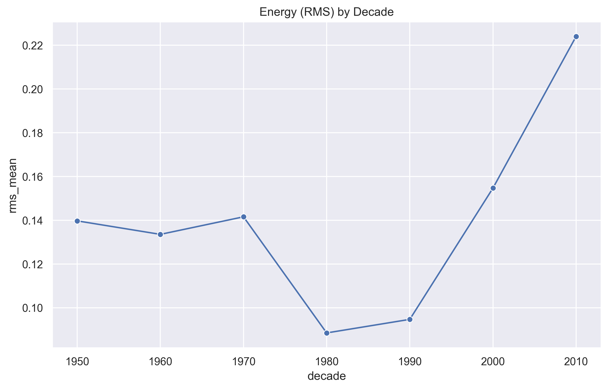
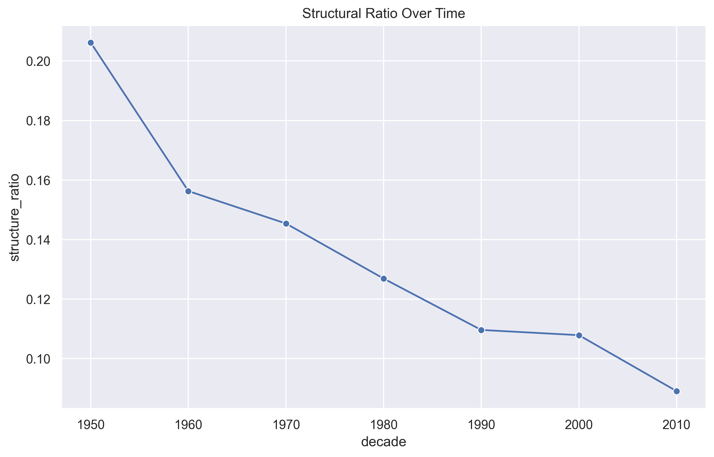
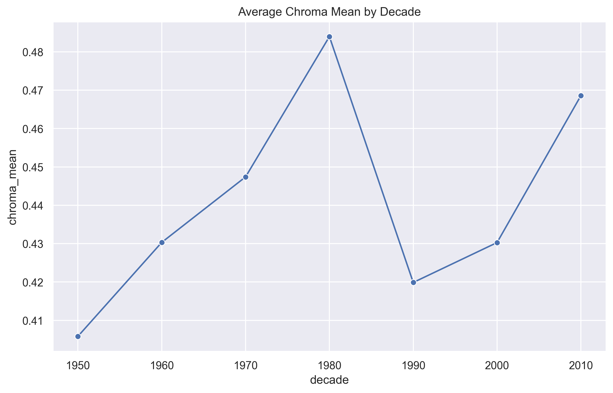

Average Tempo
Tempo increased from the 1950s to a peak in the 1980s, then stabilized in modern decades. This challenges the assumption that modern hits are simply faster.

Annabelle Sole - annabellesole2026@u.northwestern.edu
Connor Olson - connorolson2026@u.northwestern.edu
CS 352 – Machine Perception of Music & Audio
Northwestern University
Bryan Pardo
This project analyzes how popular music has evolved across decades by examining both acoustic features and structural complexity of top songs from the 1950s to the 2010s. We extracted low-level audio features using Librosa and structural segmentation using MSAF. We then averaged features by decade to study long-term trends.
Tempo increased from the 1950s to a peak in the 1980s, then stabilized in modern decades. This challenges the assumption that modern hits are simply faster.
We observe a dramatic increase in RMS energy over time, especially from the 1990s onward, consistent with the “loudness war” phenomenon in modern production.

Using MSAF, we measured structural entropy across decades. Results suggest modern songs may be slightly more structurally repetitive than earlier decades.

The number of segments per song has fluctuated over time, reflecting changes in song structure and complexity as production techniques evolved.

The ratio of structured sections to total segments shows how much of a song is composed of repeating parts, highlighting trends in musical predictability.

Song length expanded through the CD era, peaked in the 1990s, declined with the rise of streaming, and partially rebounded in the 2010s.

Average chroma values reflect the harmonic intensity of popular music. The trend suggests a cyclical pattern over time, with tonal richness rising up to the 1980s, dipping in the 1990s, and increasing again in the 2000s and 2010s.
